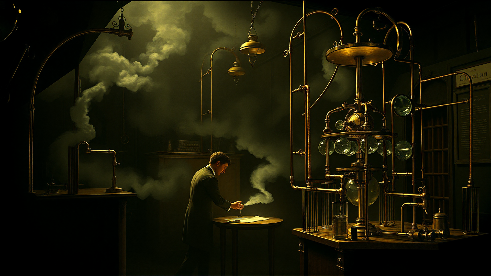
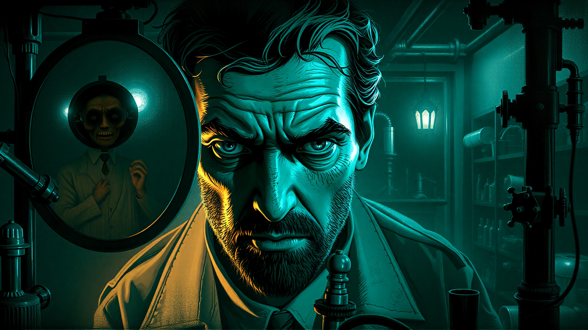
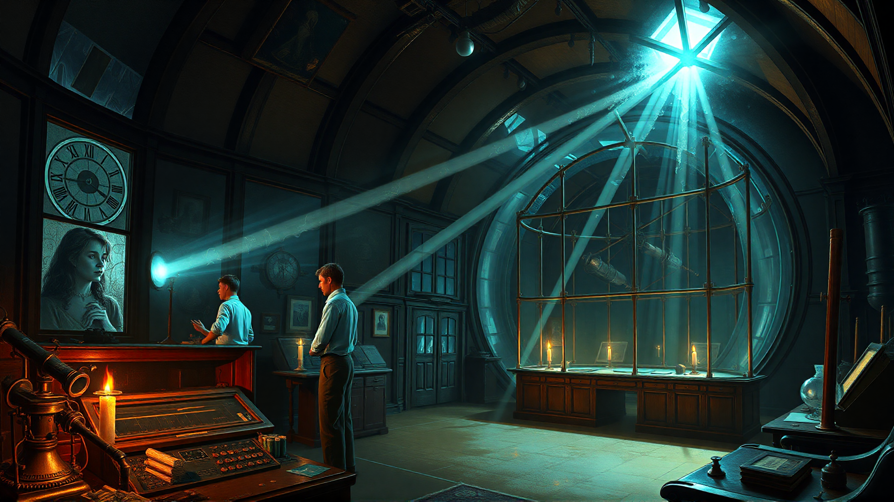
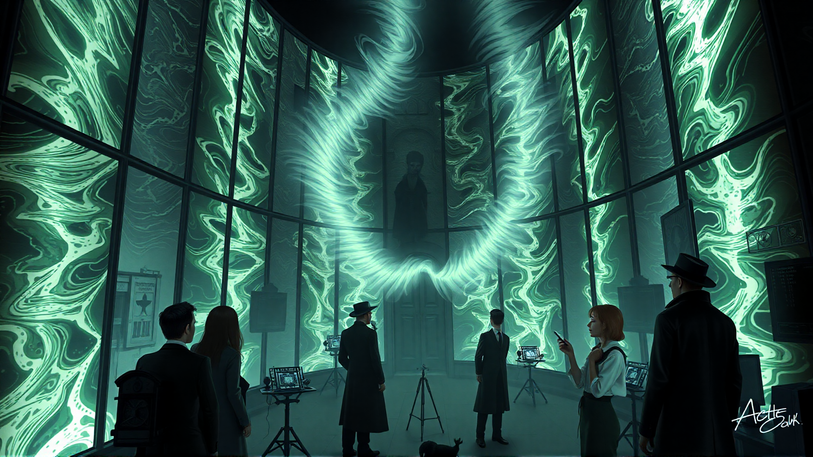
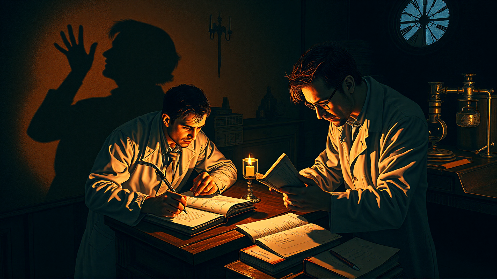
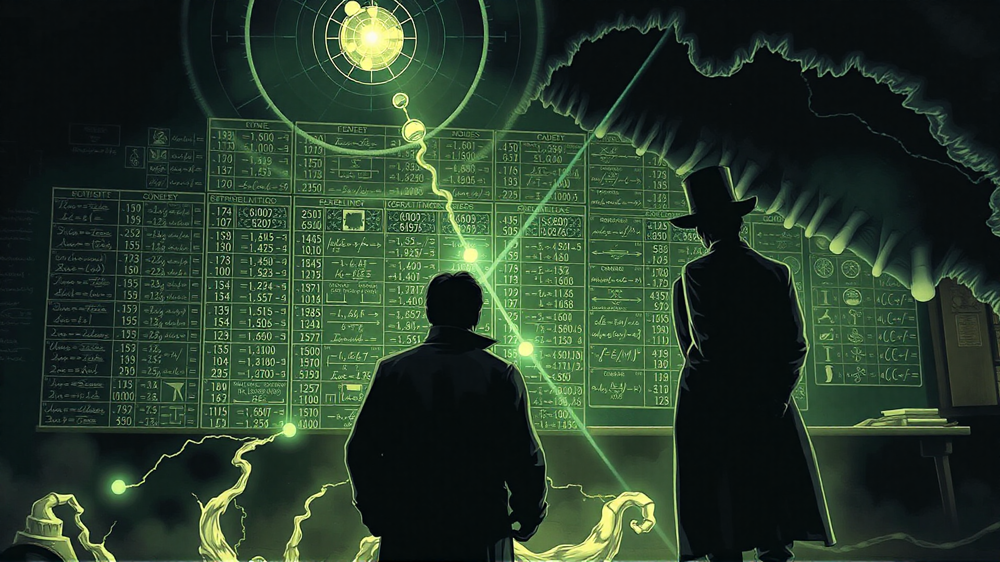

Koncem léta roku 1887 byl vzduch plný očekávání, když se dva z nejgeniálnějších mozků té doby, Albert Michelson a Edward Morley, připravovali na to, že se v posvátných sálech Chicagské univerzity zapíší do historie. Jejich experiment, který byl pouhým konceptem jen několik měsíců předtím, zaujal kolektivní představivost - pokus o odhalení odvěkého tajemství světelného éteru.
Jak se dny krátily a noci stmívaly, pociťovali studenti katedry fyziky nevyslovený neklid. Mezi vyučujícími se začalo šuškat o „jiném světě“ - nevysvětlitelné síle, o níž se předpokládalo, že je jádrem vesmíru. Atmosféra byla plná napětí, jako by se začínala rozpadat samotná struktura reality.
Pro Michelsona, muže pohlceného svou prací, se dny rozmazávaly v mlze měření a výpočtů. Jeho mysl se změnila v labyrint rovnic a teorémů a každý nový poznatek podněcoval jeho všepohlcující vášeň pro úspěch experimentu. Když se v tlumeně osvětlené laboratoři probíral svými poznámkami, nemohl se zbavit pocitu, že ho někdo pozoruje - jako by na něj těsně za hranicí jeho vnímání číhala neviditelná přítomnost.
Při sestavování experimentu - jemného uspořádání zrcadel a čoček - se studenti nemohli ubránit pocitu, že tančí nad propastí něčeho významného. Michelsonův-Morleyho experiment byl víc než jen vědecký počin; byl to pokus odpovědět na základní otázky lidstva o podstatě vesmíru.
Když začali s měřením, vzduch jako by zhoustl, jako by na jejich přítomnost reagoval samotný éter. Studenti se tvářili odhodlaně, ale pod jejich stoickou fasádou se skrývalo tajemství - pocit neklidu, že něco není v pořádku.
Slova byla přerušena, když se zdálo, že se skleněná stěna komory zavlnila a zachvěla, jako když hladina klidného rybníka narazí na neviditelný předmět. Studenti si vyměnili nervózní pohledy; jako by něco vyrušili, něco, co se nedá tak snadno zadržet.
„Co je to?“ Michelson zašeptal a očima zkoumal komnatu, zda se v ní něco nepohybuje.
Jak experiment postupoval, jevy byly stále častější - a znepokojivější. Trajektorie světelného paprsku se začala odchylovat, jako by ji řídila neviditelná síla. Údaje studentů byly stále nepravidelnější a jejich sny byly temnější a živější.
„Někdy mám pocit, že jenom strkáme zobák do větru,“ svěřil se Morley té noci ve svém deníku. „Hrajeme si se silami, které neovlivníme.“
S postupující nocí začalo studentům unikat uchopení reality. Zdálo se, že ozvěny výsledků experimentu se jim rozléhají hlavou a našeptávají jim pravdu, kterou si dosud neuvědomovali - že samotná struktura jejich světa je utkána z vláken světla a temnoty.
V následujících dnech bylo chování studentů stále nevyzpytatelnější. Michelsonovy noci byly plné vizí vířících mraků a jeho mysl trápila myšlenka na neuchopitelnou pravdu, kterou nemohl pochopit. Morley se mezitím jakoby ztrácel v tajemství éteru - muž rozpolcený mezi svou povinností vědce a rostoucím pocitem neklidu.
„Proboha,“ zapsal si jedné osudné noci do svého deníku, “obávám se, že nás vedou cestou šílenství.“
Nastal den odhalení jejich experimentu. Při pohledu na výsledky - tapisérii vzorců, které se vymykaly veškerému chápání - si uvědomili, že narazili na něco mnohem většího, než si kdy dokázali představit.
„Edwarde?“ Michelsonův hlas byl sotva slyšitelný, jeho slova byla protkána náznakem zoufalství.
„Aha,“ odpověděl Morley a očima skenoval údaje, jako by hledal odpověď, kterou nedokázal úplně pochopit. „Myslím, že jsme to našli, Alberte.“
V tu chvíli věděli, že se jejich svět navždy změnil - že tajemství vesmíru leží za závojem reality a čeká, až je rozluští ti, kdo mají dost odvahy postavit se prázdnotě.
Ve tvářích studentů se zračila směsice úžasu a hrůzy, když pochopili pravou podstatu svého objevu - zjevení, které navždy rozvrátí jejich vnímání času, prostoru a lidské zkušenosti. Nad nimi se vznášel stín éteru, temná přítomnost, která je bude pronásledovat po zbytek života.

O autorovi
TatkaSmolko je autorem několika hororových povídek a románů. Ve své tvorbě se zaměřuje na psychologický horor a nadpřirozené jevy. Žije ve starém domě na okraji města, kde nachází inspiraci pro své příběhy.